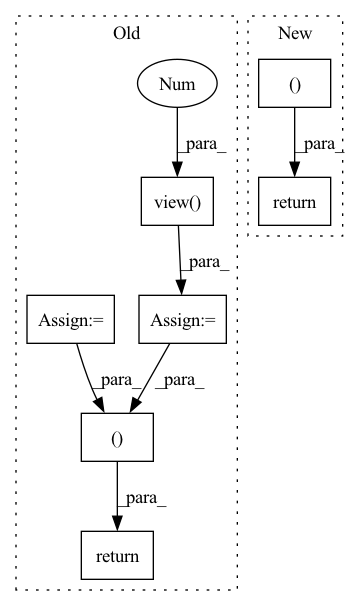

Pattern ID :1067
Before Change
) >= lens.unsqueeze(1)
x = x.masked_fill(mask.unsqueeze(1).to(device=x.device), 0)
// del mask
lens = self.get_seq_len(lens)
sh = x.shape
if self.heads != -1:
x = x.view(-1 , self.heads, sh[-1])
out = self.conv(x)
if self.heads != -1:
out = out.view(sh[0], self.real_out_channels, -1)
return out, lens
class GroupShuffle(nn.Module):
def __init__(self, groups: int, channels: int):After Change
if self.use_mask:
x = self.mask_fill(x, lens)
out = self.conv(x)
return out, self.get_seq_len(lens)
def GroupShuffle(groups: int, channels: int) -> nn.Module:
Group shuffle operator from shufflenet.In pattern: SUPERPATTERN
Frequency: 4
Non-data size: 7
Instances Fragment ID: 3150244
Project Name: scart97/thunder-speech
Commit Name: 1eb7dfb6a8a7b1e3d30aaebb26a0f0ca0390e542
Time: 2021-01-30
Author: scart.lucas@gmail.com
File Name: src/thunder/jasper/blocks.py
M Class Name: MaskedConv1d
N Class Name: MaskedConv1d
M Method Name: forward(3)
N Method Name: forward(3)
M Parent Class: nn.Module
N Parent Class: nn.Module
M File Name: src/thunder/jasper/blocks.py
N File Name: src/thunder/jasper/blocks.py
M Start Line: 165
M End Line: 185
N Start Line: 225
N End Line: 239
Before Change
mel_outputs, alignments, stop_tokens = self.decoder(
encoder_outputs, mel_specs, mask,
self.speaker_embeddings_projected)
mel_outputs = mel_outputs.view( B, -1 , self.mel_dim)
linear_outputs = self.postnet(mel_outputs)
linear_outputs = self.last_linear(linear_outputs)
return mel_outputs, linear_outputs, alignments, stop_tokens
def inference(self, characters, speaker_ids=None, style_mel=None):
B = characters.size(0)
inputs = self.embedding(characters)After Change
// B x T_out x posnet_dim
postnet_outputs = self.last_linear(postnet_outputs)
// B x T_out x decoder_dim
decoder_outputs = decoder_outputs.transpose(1, 2)
if self.bidirectional_decoder:
decoder_outputs_backward, alignments_backward = self._backward_inference(mel_specs, encoder_outputs, mask)
return decoder_outputs, postnet_outputs, alignments, stop_tokens, decoder_outputs_backward, alignments_backward
return decoder_outputs, postnet_outputs, alignments, stop_tokens
def inference(self, characters, speaker_ids=None, style_mel=None):
B = characters.size(0)
inputs = self.embedding(characters) Fragment ID: 3150245
Project Name: coqui-ai/tts
Commit Name: e83a4b07d2558a25b0ad84dea642385a61660bd6
Time: 2019-10-28
Author: egolge@mozilla.com
File Name: models/tacotron.py
M Class Name: Tacotron
N Class Name: Tacotron
M Method Name: forward(5)
N Method Name: forward(5)
M Parent Class: nn.Module
N Parent Class: nn.Module
M File Name: models/tacotron.py
N File Name: models/tacotron.py
M Start Line: 85
M End Line: 105
N Start Line: 98
N End Line: 132
Before Change
def forward(self, x, keep_features=False):
features = self.backbone(x)
features = features.view( x.size(0), -1 )
features = self.bottleneck(features)
if keep_features:
return self.head(features), features
else:
return self.head(features)
def get_parameters(self):After Change
features = self.backbone(inputs)
features = self.bottleneck(features)
outputs = self.head(features)
if keep_adv_output:
features_adv = self.grl_layer(features)
self.grl_layer.step()
outputs_adv = self.adv_head(features_adv)
return outputs, outputs_adv
else:
return outputs
def get_parameters(self): Fragment ID: 3150252
Project Name: thuml/transfer-learning-library
Commit Name: 6715ce965493b31f0defccaf6c0b1a654ffd4a0a
Time: 2020-03-11
Author: JiangJunguang1123@outlook.com
File Name: dalib/adaptation/mdd.py
M Class Name: Classifier
N Class Name: Classifier
M Method Name: forward(3)
N Method Name: forward(3)
M Parent Class: nn.Module
N Parent Class: nn.Module
M File Name: dalib/adaptation/mdd.py
N File Name: dalib/adaptation/mdd.py
M Start Line: 151
M End Line: 159
N Start Line: 125
N End Line: 135
Before Change
p = Normal(0., 1.)
// KLD including logdet term
p_z_ = torch.sum(p.log_prob(z_), -1)
q0_z_0 = torch.sum(q0.log_prob(z_0), -1)
log_det = log_det.view(-1 )
kld = - torch.sum(p.log_prob(z_), -1) + torch.sum(q0.log_prob(z_0), -1) - log_det.view(-1)
self.test_params = [torch.mean(- torch.sum(p.log_prob(z_), -1)), torch.mean(torch.sum(q0.log_prob(z_0), -1)), torch.mean(- log_det.view(-1)), torch.mean(kld)]
// Decode
z_ = z_.view(z_.size(0), args.latent_size)
zD = self.decode(z_)
out = torch.sigmoid(zD)
return out, p_z_, q0_z_0, log_det
def bound(rce, x, p_z_, q0_z_0, log_det, beta):
After Change
zD = self.decode(z_)
out = torch.sigmoid(zD)
return out, kld
def bound(rce, x, kld, beta):
Fragment ID: 3150237
Project Name: vincentstimper/normalizing-flows
Commit Name: 9c5fb45265a7090efd8c3c51662fb24d7f5208bc
Time: 2020-03-08
Author: 43236963+lukasryll@users.noreply.github.com
File Name: normflow/inf_network.py
M Class Name: FlowVAE
N Class Name: FlowVAE
M Method Name: forward(2)
N Method Name: forward(2)
M Parent Class: nn.Module
N Parent Class: nn.Module
M File Name: normflow/inf_network.py
N File Name: normflow/inf_network.py
M Start Line: 73
M End Line: 95
N Start Line: 84
N End Line: 92